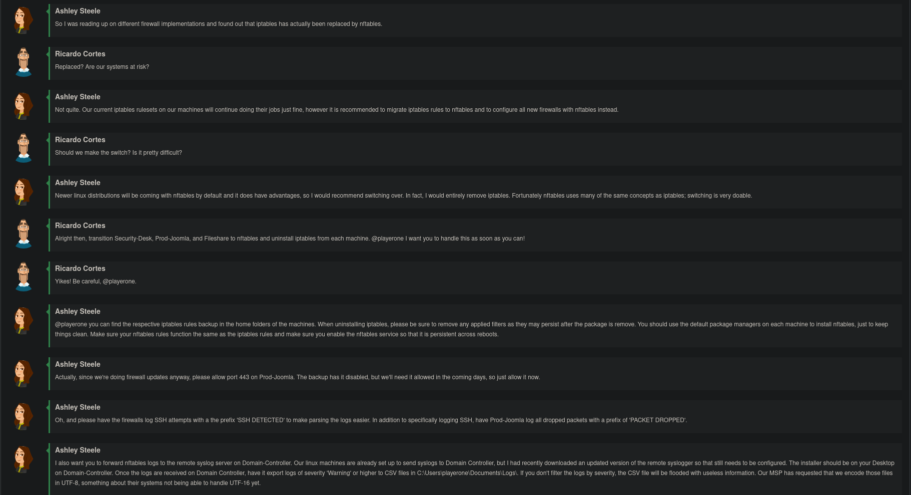
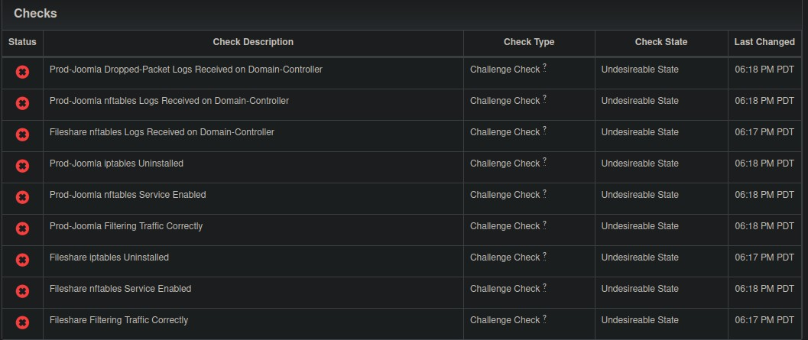
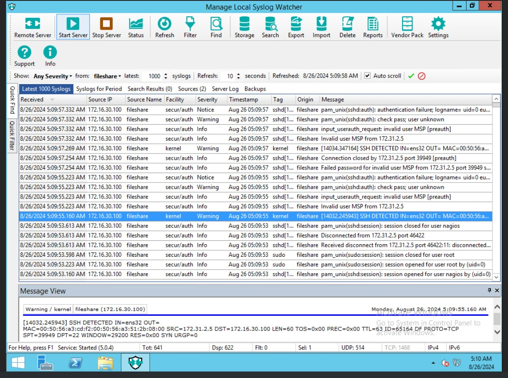

CCDC Training 1 - Firewall Updates at Pretty Safe Electronics Corp
Author
Jeffrey Fonseca
Published
August 25, 2024
This is for the NICE challenge. It’s a blue team challenge where you are tasked with hardening machines. Perhaps there is more, but all I was asked to do for this challenge was some simple hardening.
The name of this specific challenge was “CCDC Training 1 - Firewall Updates at Pretty Safe Electronics Corp.”. The point of this challenge was to convert multiple older Linux machines from iptables to nftables.
Like previous Nice challenges, this challenge also began with a simulated chatroom, where we the situation was explained.

Here are the empty checks:

Fileshare
Nftables Migration
Tip
Use the pastebinit command, provided by the pastebinit package to easily upload files to pastebins, online sites dedicated to sharing short bits of text.
command | pastebin -b paste.debian.net uploads to <paste.debian.net>, or use the -i argument to upload a specific file.
In the home directory, there is a file that contains the iptables rules:
fs_iptables_v4
# Generated by iptables-save v1.6.0 on Thu Jan 17 04:11:15 2019*filter:INPUT DROP [0:0]:FORWARD ACCEPT [0:0]:OUTPUT ACCEPT [41:8202]-A INPUT -m conntrack --ctstate RELATED,ESTABLISHED -j ACCEPT-A INPUT -p tcp -m tcp --dport 22 -j ACCEPT-A INPUT -p tcp -m tcp --dport 139 -j ACCEPT-A INPUT -p tcp -m tcp --dport 445 -j ACCEPTCOMMIT# Completed on Thu Jan 17 04:11:15 2019
Except… not quite. When using iptables -L or iptables-save to look at the rules, they give different results than the saved file, a few less:
# Generated by iptables-save v1.6.0 on Mon Aug 26 01:26:17 2024*filter:INPUT DROP [31:3283]:FORWARD ACCEPT [0:0]:OUTPUT ACCEPT [2070:673014]-A INPUT -m conntrack --ctstate RELATED,ESTABLISHED -j ACCEPT-A INPUT -p tcp -m tcp --dport 22 -j ACCEPT-A INPUT -p tcp -m tcp --dport 445 -j ACCEPTCOMMIT# Completed on Mon Aug 26 01:26:17 2024
Because the file in the home directory has extra iptables configuration, I will use those configurations instead. Despite being the output of iptable-save, I can use the iptables-nftables-compat package, which provides and iptables and iptables-save command that actually manipulate nftables.
So, because only the INPUT chain has rules, and none of the other chains have any rules (including mangle or nat), we only need to flush those rules:
iptables -F INPUT
The other thing that needs to be done is to change the iptables INPUT table to from teh default DROP policy to an ACCEPT policy.
Now, with the iptables chains set to the default, and the ruleset saved, we can comfortable switch to nftables. The iptables-compat set of commands, provided by the iptables-nftables-compat package, lets us restore the ruleset to nft from the firewall:
iptables-compat-restore fs_tables_v4 — this passes the “Fileshare filtering traffic correctly check.
systemctl enable nftables
systemctl start nftables.service
And… no checks passed? It seems that enabling the nftables service resets the nftables rules.
The systemd nftables service seems to be a oneshot service that does nothing but flush the nftables rules. After disabling this service and using iptables-compat-restore, again, the “Fileshare filtering” check passes again.
After apt remove iptables, this removes iptables… and iptables-nftables-compat. But the “Fileshare remove iptables” check passes.
Firewall Logging
What needs to be logged:
Log all SSH connection attempts with a prefix of “SSH DETECTED”
iptables-compat -N SSH # Create new chain for SSHiptables-compat -D INPUT -j ACCEPT -p tcp --dport 22 # delete the existing ssh ruleiptables-compat -A INPUT -j SSH -p tcp --dport 22 # Create new ssh rule that targets ssh chain insteadiptables-compat -A SSH -m limit --limit 5/min -j LOG --log-prefix "SSH DETECTED " --log-level 4iptables-compat -A SSH -j ACCEPT
This works, and logs are reported in syslog, and forwarded to the domain controller machine. It just does not pass the check.
Prod-Joomia
Nftables migration
Follow steps for the machine “Fileshare”.
Firewall logging
Follow steps for “Fileshare” machine.
iptables-compat -N DROPLOGiptables-compat -P INPUT ACCEPT # Accepts all input packetsiptables-compat -A INPUT -j DROPLOG # if this is the last rule in the chain, then any packets that don't match previous rules are subject to this one instead.iptables-compats -A DROPLOG --m limit -limit 5/min -j LOG --log-prefix "PACKET DROPPED " --log-level 4iptables-compat -A DROPLOG -j DROP # If this is the last rule in the "DROPLOG" chain, then packets which don't match this rule will match this instead
Domain-Controller
On the desktop, there is program to install “Syslog” watcher. Follow the prompts. Install both the service, and the manager. Make sure to select the option to open the firewall port as well.

It seems to be detecting syslog connections with ssh, but I’m not getting the points. It does say “SSH DETECTED” logged from the Fileshare machine.